How to minimize mistakes
Good coding practices
![]()
How to minimize mistakes
Good coding practices

Felix Schönbrodt & Caroline Zygar-Hoffmann
Ludwig-Maximilians-Universität
München
This presentation is licensed under a CC-BY 4.0 license.
You may copy, distribute, and use the slides in your own work,
as long as you give attribution to the original author at each slide that you use.

The Ideal? Reality?
- Surrounded from a flood of fake news, science is one of (the last?) sources of credible information.
- Trust in science: Scientists are impartial, meticulous, and check their results rigorously in peer review before publication
- Although error-freeness cannot be guaranteed, science provides the most reliable source of information, and if errors happen, they soon get detected and corrected.
- Replication/credibility crisis
- Number of retractions rises exponentially
- Pressure to „publish or perish“ leads to hurried manuscript, less error checking
- Reviewer overload leads to superficial reviews
- statcheck(Nuijten et al., 2016): 50% of psychology papers contain at least one inconsistent statistic
Mistakes lurke everywhere
- Errors in data collection software/scripts
- Error in manual data transcription
- Analyzing the wrong data set (e.g., an old version, a filter has been unknowingly applied)
- Coding errors
- Wrong group assignment (control/ experimental group)
- NAs coded as 99?
- Faulty analysis software; version changes in R packages
- Mistyping numbers when copying them from R to manuscript
- Send the wrong file to the journal submission system
- Asymmetry: Mistakes tend to go in the preferred direction (Gould, 1996), because we check more vigorously when results (unexpectedly) go into the wrong direction.
- See also „garden of forking paths“ (Gelman & Loken, 2013): A lot of p-hacking is unintentional
Mistakes lurke everywhere
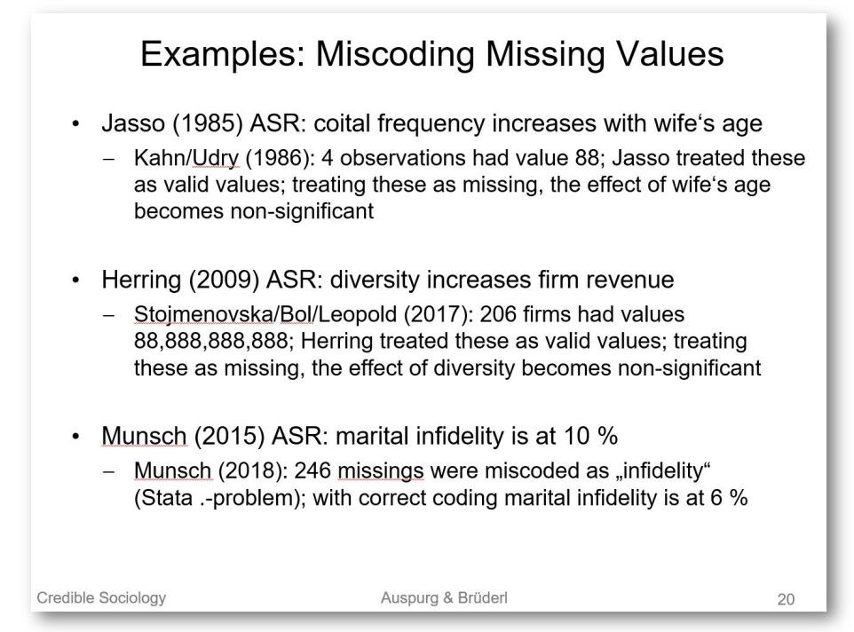
How to prevent coding errors?
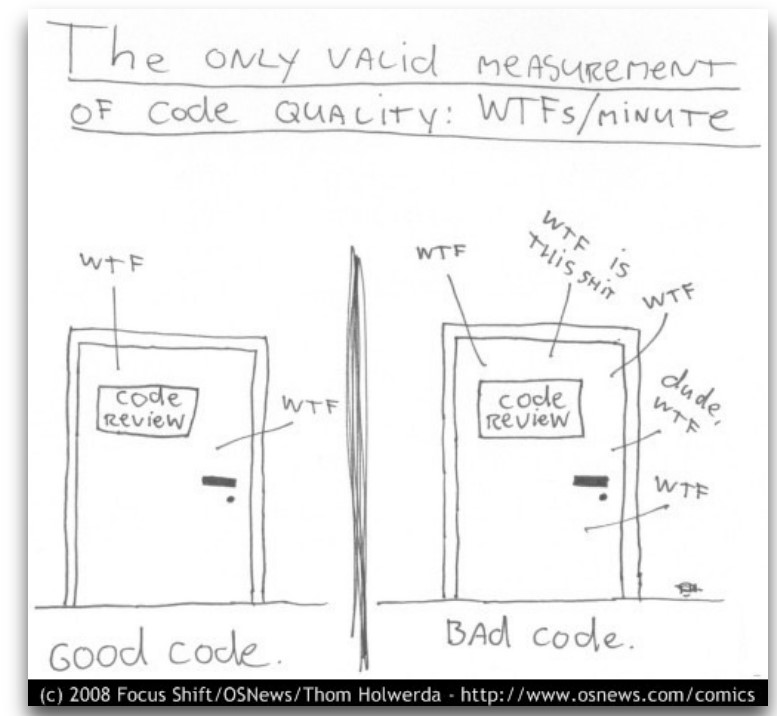
Unit tests / sanity checks
- Always look at the descriptive statistics (min, max, NAs, mean) of every variable (also transformed/computed variables)
- Know the scales of your variables: Is the mean plausible? Is the minimum and maximum value theoretically possible and plausible?
- Does a scale value from multiple items have only discrete values?
- Do z-standardized variables really have mean=0 and SD=1?
- Plot all variables (scatterplot, histograms)
Unit tests / sanity checks
- The summarytools package makes this really easy:
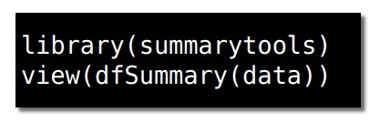
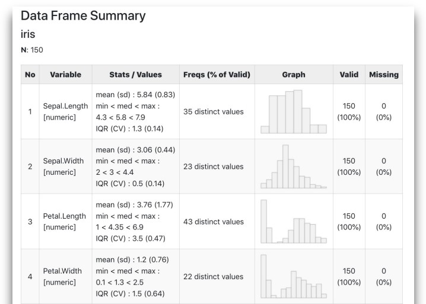
alternatively: codebook package by Ruben Arslan (also has RStudio plugin). Has some nice convenience functions, e.g. when importing SPSS or other data files.
Technical reproducibility
- When you rely on random numbers (e.g., in simulation studies): Set a seed for reproducibility
- Take care when doing parallel computing, this sometimes requires special treatment of seeds
- Document exact versions of all packages/ external programs at each completed stage of data analysis
- e.g., in R: Save the sessionInfo() of the analytical pipeline in an accompanying file when you submit a paper, and for every revision
- Save a snapshot of the current version/state of the statistical software
- e.g., in R: checkpoint package, packrat package, renv package
- The safest way: Make a docker container which contains the full computational environment (including OS)
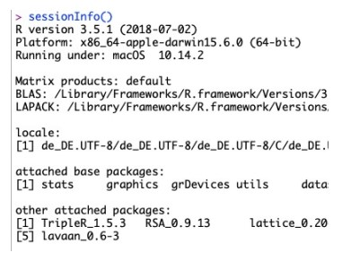
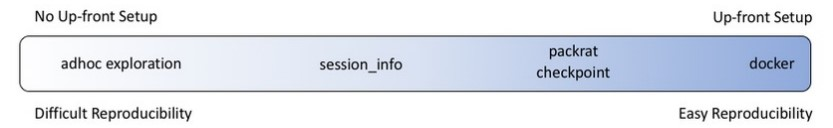
Coding style
- Meaningful variable names, meaningful directory structure
- Never copy and paste code
- Never write a coding block longer than your screen
- Literate Programming (Knuth): Computer code is for humans, not just for computers.
File organization
- (The following guidelines apply to many, but not all possible types of projects)
- All files that are necessary for reproducing the results should be bundled in one directory
- Including: primary unprocessed data files, scripts for data preprocessing, cached intermediate data objects, scripts for hypothesis testing, generated result plots, …
- Goal: You zip the directory, send it to somebody, and the person can reproduce the full analytical pipeline.
- Use a consistent, self-explanatory subdirectory structure
- Number script files in execution order (see next slide)
Directory organization
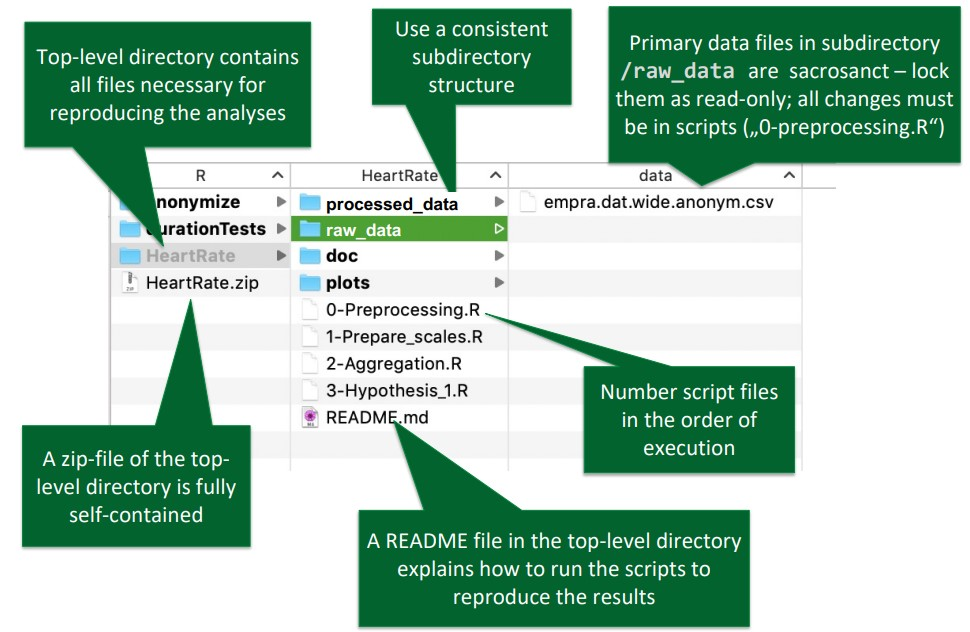
Subdirectory organization
- (Again, this is one possible organization scheme)
- /raw_data: Contains all raw primary data files, as you received them (or exported them from the experimental software), without any manual preprocessing.
Primary data files are sacrosanct – set them to read-only, never change anything in them.
Any transformation, data exclusions, or error corrections must be done in scripts in order to be reproducible. - /processed_data: Stores intermediate data objects. For example, after you did all your outlier exclusions, data transformations, etc., store a file „data_cleaned.csv“ in /cache. If you refer to this data file in subsequent scripts, you do not have to run the preprocessing script every time. All files in /processed_data can be safely deleted, as they can be reconstructed by running all script files in the correct order.
- /doc: Documents (such as PDFs, manuals, etc.) related to the project.
- /plots: Store result plots that you created in your scripts.
- /export: If you export (sub)data sets or summaries for dissemination, store them here.
- /archive: Old scripts and other files which are not used for your final analytical pipeline, but which you want to keep for some reasons.
Variable name conventions
- snake_case, camelCase, dot.style, sTUdLy cAPs?
- Do not use dots in variables (clashes with some functions)
- Some consensus that snake_case is the best choice, but respect languagespecific coding conventions
- Be consistent!
- Prefer short variable names, but:
understandability >> brevity
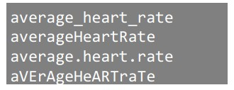
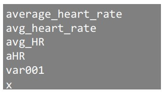
Variable name conventions
- Before: Inconsistent mixture of naming styles
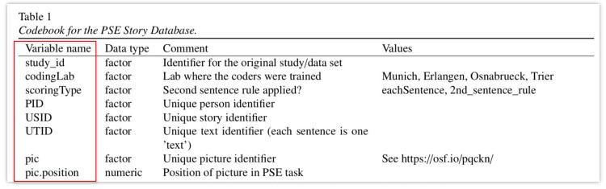
- After: Consistent naming style
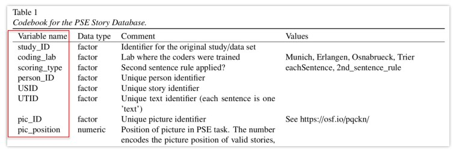
Code commenting
- At the start of each script file: Author, license, purpose of the file.
- Load add-on packages all at once at the beginning of the file
- Rule of thumb: At least 1 comment per 3 lines of code
- Link code comments to paper structure
- „Table 3: Descriptives of…“
- „Hypothesis 2: Does metafilin increase […]?“
- Bonus: Link code comments to IDs of the preregistration
- Separate chunks of code with comment lines
- If the file gets too long (e.g., > 500 lines), split into multiple files
- Use English variable names and comments from the beginning (you don‘t want to translate everything before dissemination)
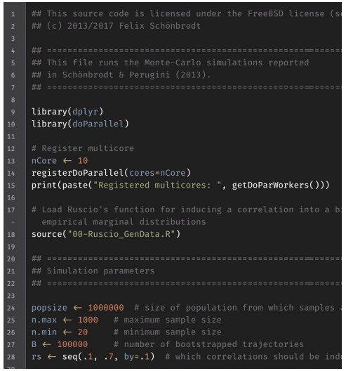
Collaboration
- Pair Programming
- Pair programming is an agile software development technique in which two programmers work together at one workstation. One, the driver, writes code while the other, the observer or navigator, reviews each line of code as it is typed in. The two programmers switch roles frequently. (Wikipedia)
- Golden route: Independent implementation
References
- Bishop, D. V. M. (2018). Fallibility in Science: Responding to Errors in the Work of Oneself and Others. Advances in Methods and Practices in Psychological Science, 1(3), 432–438. http://doi.org/10.1177/2515245918776632
- Rouder, J., Haaf, J. M., & Snyder, H. K. (2018, March 25). Minimizing Mistakes In Psychological Science. https://doi.org/10.31234/osf.io/gxcy5
- Martin, R. (2008). Clean Code: A Handbook of Agile Software Craftsmanship (1st ed.). Upper Saddle River, NJ: Prentice Hall.
- Karthik Ram: How To Make Your Data Analysis Notebooks More Reproducible
End
Contact
- @nicebread@scicomm.xyz
- ed.uml.ysp@tdorbneohcs.xilef
- https://www.nicebread.de
- https://github.com/nicebread